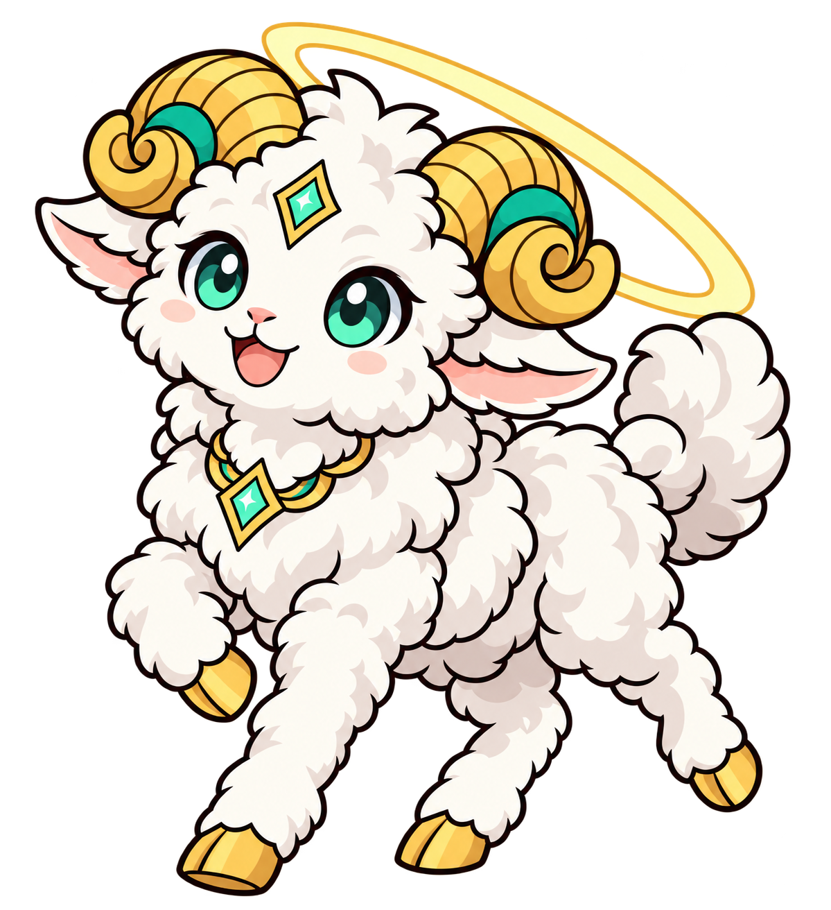

◉ COIN 0
DUNGEON 01
真夜中の百貨店
英語 → 日本語
挑戦0
クリア0
最高到達―

DEPARTURE
出撃準備
相棒 GOIMON
ラミナスなごみ · 成長体
固有SKILL
持ち込み SKILL
YOUR PATH / ACT 1
次の道を選ぼう
道の種類だけが見えるランダムな迷宮。敵の正体は入るまで不明。
ACT 1 / 3
真夜中の百貨店
相棒ゴイモン
HP 90 / 90
HAND 5
✦
BATTLE CLEARED
VICTORY
SELECTED SKILL